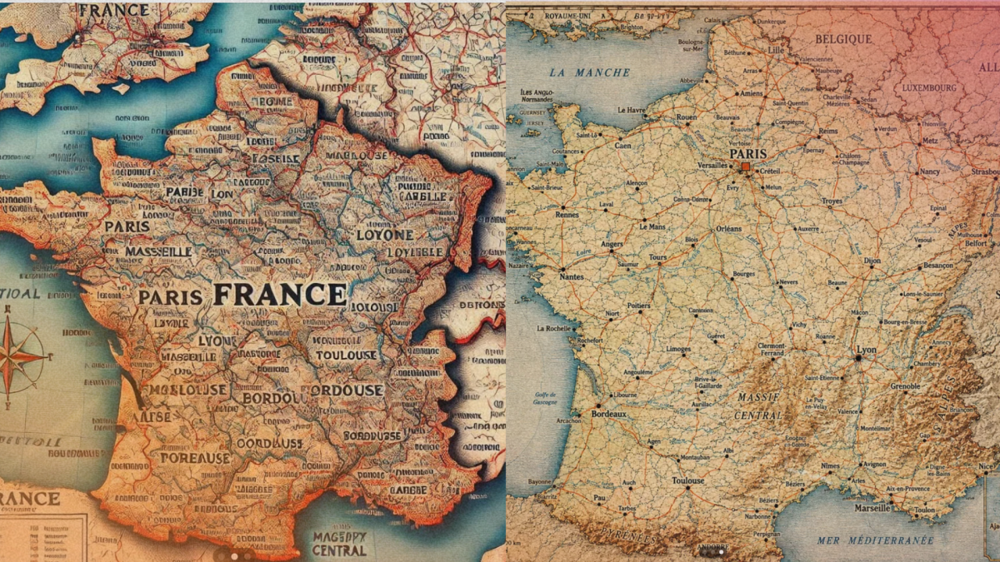

De « Bordouse » à Bordeaux : cette carte de France montre les progrès de ChatGPT en un an et demi

🛒 En lien avec cet article
Publicité — Liens de partenariat Amazon : une commission peut être reversée, sans surcoût pour vous.
🔥 Top produits tech du moment
Publicité — Liens de partenariat Amazon : une commission peut être reversée, sans surcoût pour vous.
L'intelligence artificielle continue de transformer en profondeur notre quotidien et l'économie. Cette annonce s'inscrit dans une dynamique où les grands acteurs accélèrent leurs investissements et leurs lancements.
Ce qu'il faut retenir
En mars 2025, ChatGPT produisait une carte de France complètement délirante, remplie de villes imaginaires.
Dix-sept mois plus tard, le résultat est méconnaissable -- mais pas 100 % convaincant.
L'occasion de ressortir un autre petit défi des générateurs d’images : le verre de vin rempli à ras bord.
Pourquoi c'est important
Cette information marque une nouvelle étape dans le développement de l'intelligence artificielle. Elle concerne directement les utilisateurs de technologies numériques et mérite d'être suivie de près dans les prochaines semaines. De « Bordouse » à Bordeaux : cette carte de France montre les progrès de ChatGPT en un an et demi est ainsi un signal à prendre en compte pour comprendre les évolutions du secteur.
En résumé
Retenez l'essentiel : De « Bordouse » à Bordeaux : cette carte de France montre les progrès de ChatGPT en un an et demi. Cette actualité a été rapportée par Numerama. Nous continuerons de suivre ce sujet et de vous tenir informés des prochaines évolutions.
🚀 Vous êtes freelance tech ?
Calculez votre TJM en 30 secondes : micro-entreprise, SASU, EURL ou portage salarial. Gratuit, taux 2025.
Calculer mon TJM →Source : Numerama